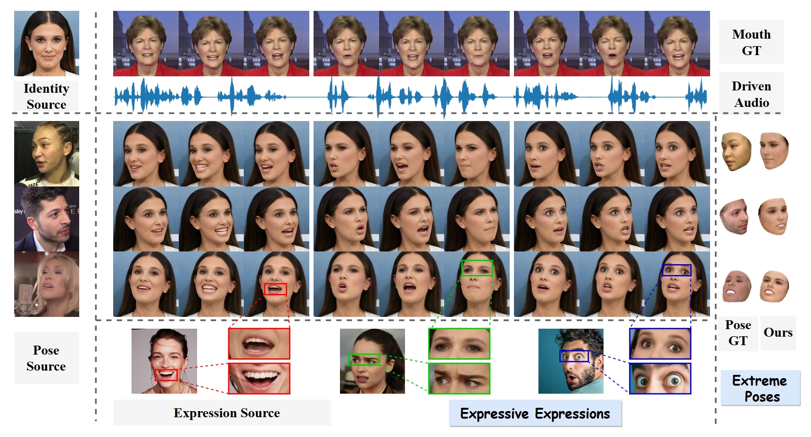
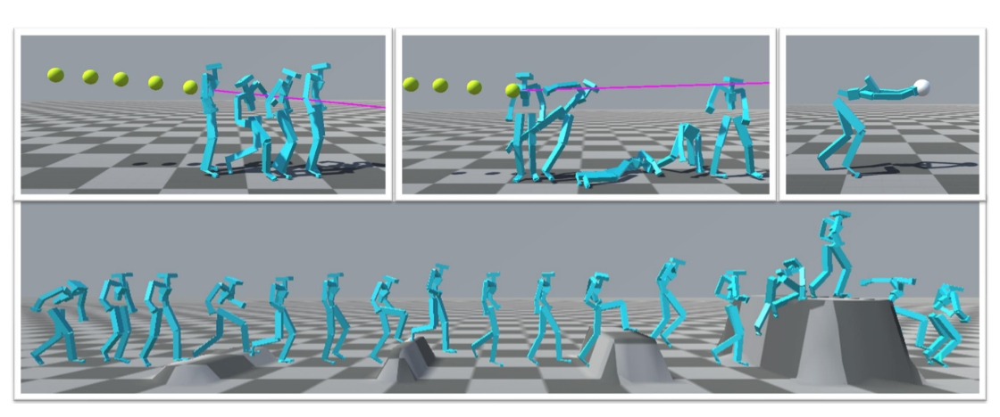
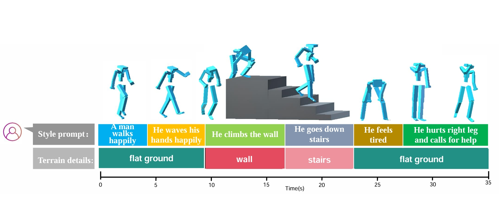
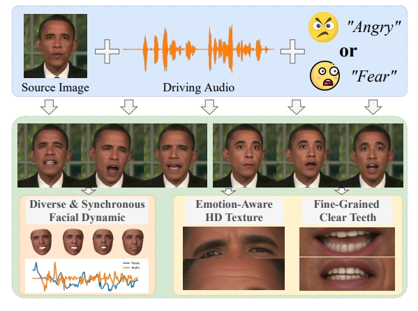
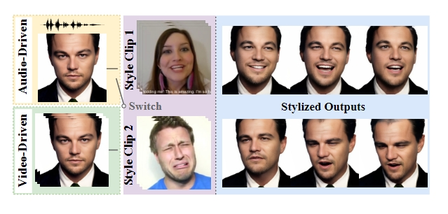
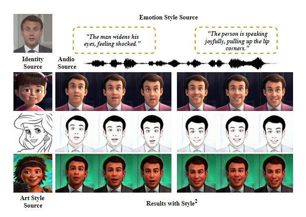
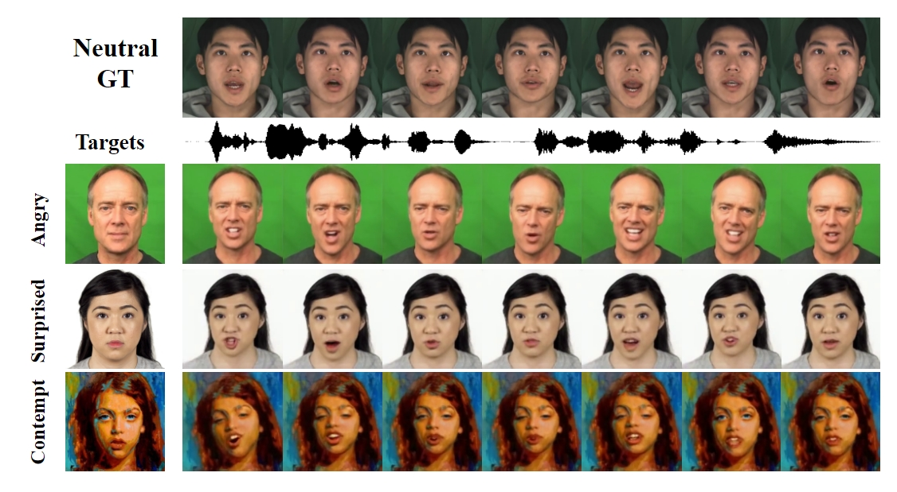
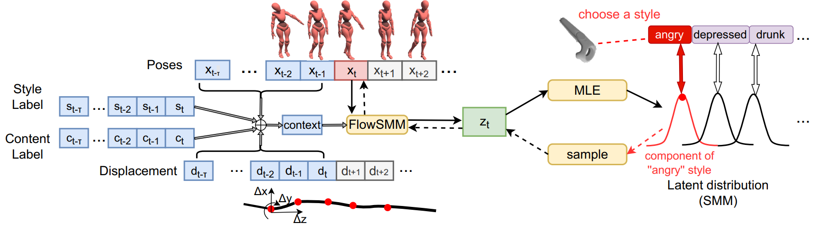
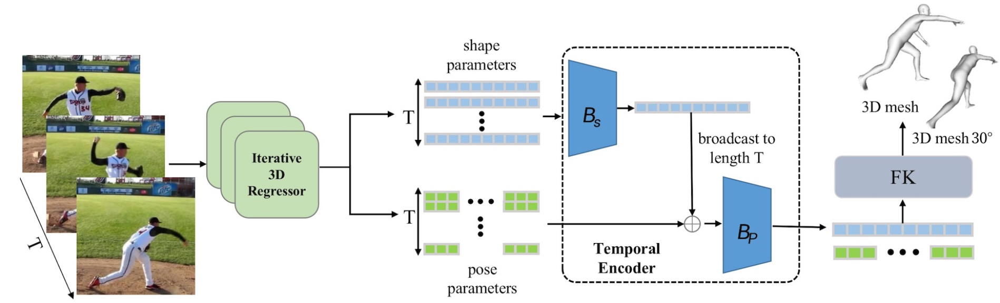

Bin Ji(吉斌)
|
Lecturer |
About me
I am a Lecturer with the Department of Computer Science at East China University of Science and Technology (ECUST).
I received my B.S. degree from Xidian University (XDU) in 2022, and my M.S. and Ph.D.
degrees from Shanghai Jiao Tong University (SJTU) in 2021 and 2025, respectively.
My research interests include character animation, digital human, embodied AI.
News
-
[2025-09] One paper is selected as a finalist for a Best Paper award at ICCV 2025
-
[2025-02] One paper accepted to CVPR 2025.
-
[2025-02] One paper accepted to TVCG 2025.
-
[2024-07] One paper accepted to ECCV 2024 (Oral).
-
[2024-02] One paper accepted to CVPR 2024.
-
[2023-12] Two papers accepted to AAAI 2024.
-
[2023-07] One paper accepted to ICCV 2023.
-
[2023-02] One paper accepted to TVCG 2023.
-
[2022-07] One paper accepted to TVSVT 2022.
-
[2021-09] One paper accepted to ICMR 2021.
Selected Publications
- Journal Reviewer of TVCG, TCSVT.
- Conference Reviewer of CVPR, AAAI, MM.
|  | Shuai Tan, Bill Gong, Bin Ji, Ye Pan International Conference on Computer Vision (ICCV) 2025 Oral. |
|  | Bin Ji, Ye Pan, zhimeng Liu, Shuai Tan, Xiaogang Jin, Xiaokang Yang IEEE / CVF Computer Vision and Pattern Recognition Conference (CVPR) 2025. |
|  | Bin Ji, Ye Pan, Zhimeng Liu, Shuai Tan, Xiaokang Yang IEEE Transactions on Visualization and Computer Graphics (TVCG) 2025. |

|
Shuai Tan, Bin Ji, Mengxiao Bi, Ye Pan European Conference on Computer Vision (ECCV) 2024 (Oral). PDF Project Code 

|
|  | Shuai Tan, Bin Ji, Ye Pan IEEE / CVF Computer Vision and Pattern Recognition Conference (CVPR) 2024. |
|  | Shuai Tan, Bin Ji, Yu Ding, Ye Pan AAAI Conference on Artificial Intelligence (AAAI) 2024. PDF Code |
|  | Shuai Tan, Bin Ji, Ye Pan AAAI Conference on Artificial Intelligence (AAAI) 2024. PDF Code |
|  | Shuai Tan, Bin Ji, Ye Pan International Conference on Computer Vision (ICCV) 2023. |
|  | Bin Ji, Ye Pan, Yichao Yan, Ruizhao Chen, Xiaokang Yang IEEE Transactions on Visualization and Computer Graphics (TVCG) 2025. |
|  | Bin Ji, Chen Yang, Shunyu Yao, Ye Pan Proceedings of the 2021 International Conference on Multimedia Retrieval (ICMR) 2021. |
Professional Activities
Total clicks: